The Tilings of Truchet
First steps towards tilings
The tilings above were generated by a program I wrote in JavaScript using the p5.js library, a tool dedicated to the development of digital and interactive art. They are the result of controlled randomness: I did not decide what their colours should be or what exact patterns of triangles and rectangles should be used to build them. I instead created the general conditions allowing their creation.
To make this project, I took inspiration from the work of Sébastien Truchet, a French mathematician and engineer active at the beginning of the Enlightenment. In 1704, Truchet wrote a Memoir on Combinations to present his work on tilings. This Memoir appears on page 363 of the History of the Royal Academy of Science, a book available for free (in French) on Gallica, a website from the Bibliothèque nationale de France (National Library of France). You can also find a beautiful book written by mathematician Dominique Doüat in 1722, Method to Make an Infinity of Different Designs (also in French). Doüat reuses Truchet’s ideas and presents new tilings. In it, he recounts a trip to the city of Orléans during which he found, in a castle, “several earthenware tiles that were square and evenly divided in two colours by a diagonal line. They were destined to pave a chapel and several other apartments.”
The tiles that Truchet describes are all identical and can be rotated in four different positions, which he designates a, b, c, and d:
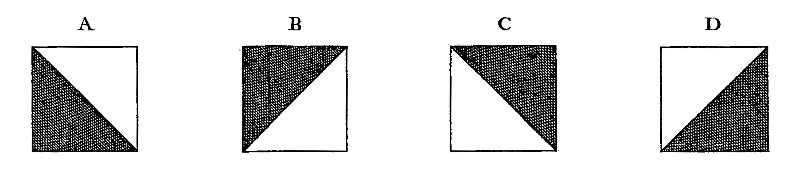
Truchet continues: “To form pleasant designs by the arrangement of these tiles, I first examined in how many different combinations two of them could be joined together, always placing them in a checkerboard pattern.” He then shows the figures resulting from these combinations, and then the ones resulting from more and more elaborate combinations. Here are some of the superb plates featured in his Memoir, engraved by Louis Simonneau:
In these plates, we can see that Truchet is interested in the creation of symmetrical groups of tiles. Because the different positions of a tile are obtained by rotations, they are also related by symmetries. Position a is related to b by a vertical symmetry, to c by a diagonal symmetry, and to d by an horizontal symmetry:
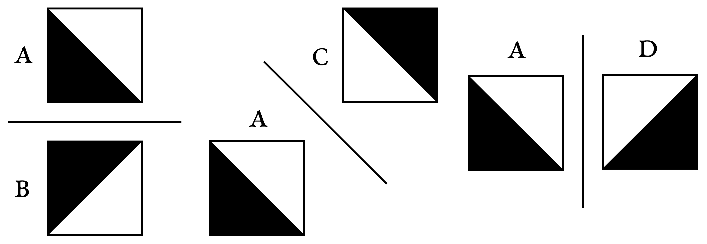
In the same way, groups of tiles can be related by symmetries:
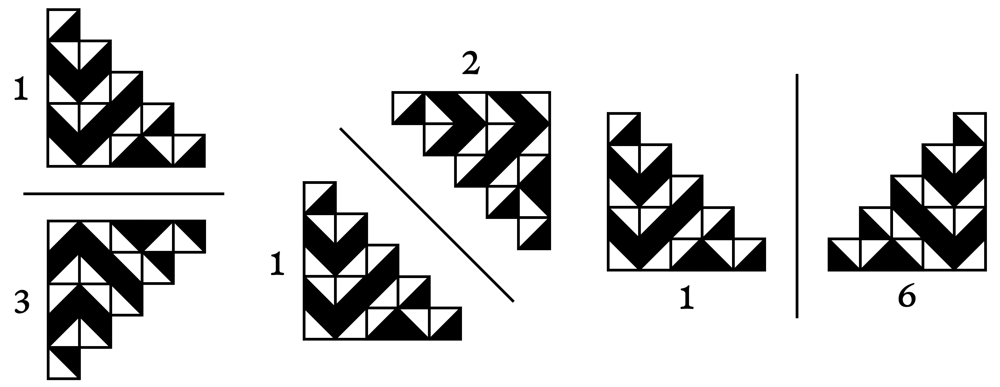
The group shaped like a staircase that we see above is crucial for Truchet, who uses it to build most of his more elaborate tilings. The group 1 is simply copied and mirrored horizontally, vertically, and diagonally in order to fill a square group of tiles, which is then repeated to form the whole tiling:
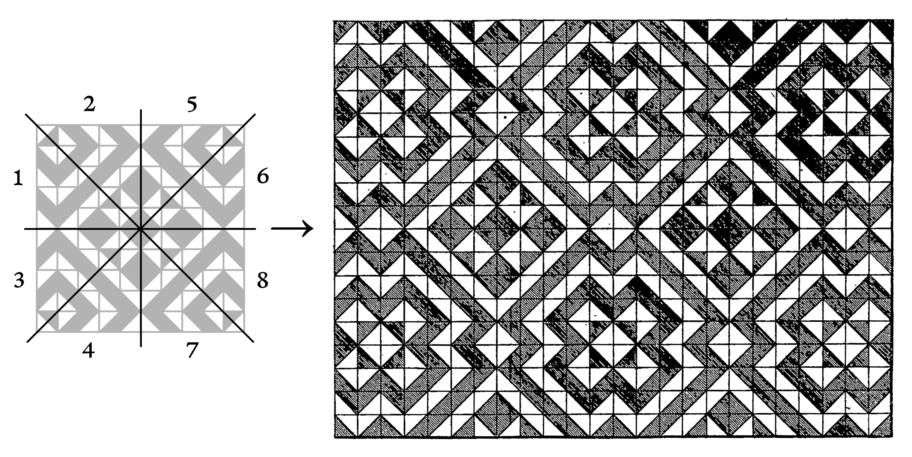
You may notice that the diagonal axes of symmetry go through the middle of the staircase’s “steps”. These steps are thus not mirrored diagonally in the tiling (but they are diagonally symmetrical with themselves). It’s also interesting to observe that Truchet builds his staircases by repeating a few simple combinations of tiles. His table 1 (shown previously) features the 64 possible combinations of two tiles. We can see that this staircase is built from the following combinations:
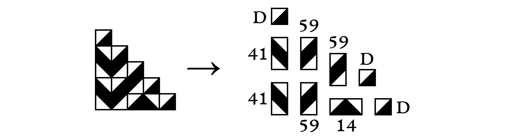
The random tiling generator
When I saw the simplicity of the staircase-shaped groups of tiles that Truchet uses to build his tilings, I decided to write a program that chooses each tile of a staircase randomly and applies automatically all the symmetries necessary to fill a tiling. I also added two new tiles: the empty tile and the filled tile, which I designate e and f. The attentive reader will understand that I’m cheating, since a, b, c, and d designate four different rotations of the same tile, while e and f designate two distinct tiles. Will such a loose way of grouping and defining things be forgiven? I find that the inclusion of e and f generates patterns that differ in interesting ways with Truchet’s own tilings.
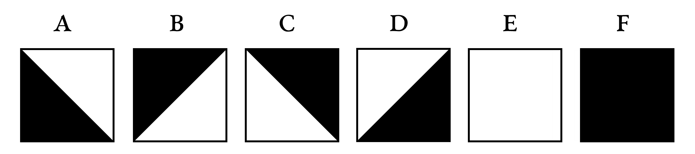
Instructions for the generator: Click or touch the tiling below to generate a new one. You can also press r on your keyboard to achieve the same effect. You can keep using this manual mode or try an automatic mode that generates a new tiling every second.
You can also choose between three sets of tiles to use in the generator: {a, b, c, d}, {a, b, c, d, e, f}, or {e, f}.
An infinity of different designs
A surprising thing about the tilings of Truchet is the enormous quantity of possible combinations. For example, a tiling whose staircase shape has a width of five tiles can be assembled in more than sixty billion different ways. Precisely, this tiling has 61917364224 possible combinations, or 610×45. The diagram below indicates the amount of possible values for each tile. 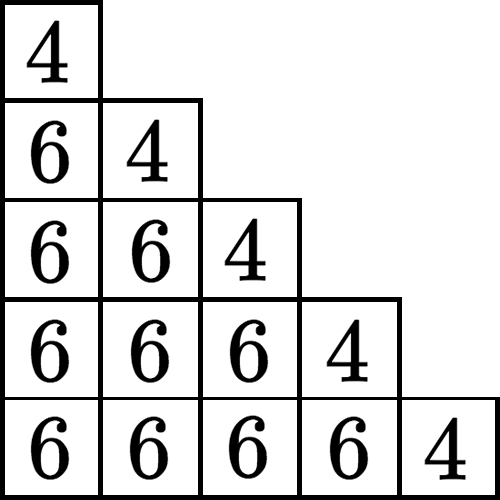Multiplying all those numbers together produces the total amount of possible combinations. Certain tiles are limited to the 4 shapes that are diagonally symmetrical with themselves: {b, d, e, f}. This limitation is not obligatory at all but it tends to create more harmonious tilings, especially in a context where all the tiles are chosen randomly. If you were to click to generate a new tiling every second, all day every day, it would take you around 1 900 years to see all of them (something I do not recommend). And since the generator creates tilings from staircases whose width varies from three to nine tiles, the time necessary to exhaust all its possibilities at the rate of one tiling per second is close to one quintillion years (the number 1 followed by 18 zeros). So each tiling that is generated has almost certainly never been seen by anyone before you, and you will most probably never see it again after the next click.
What could those tilings look like if their tiles had a different design but all of their other properties were preserved (symmetry, assembly via the staircase shape, etc.)? For example, the design of the tiles could be altered in this way:
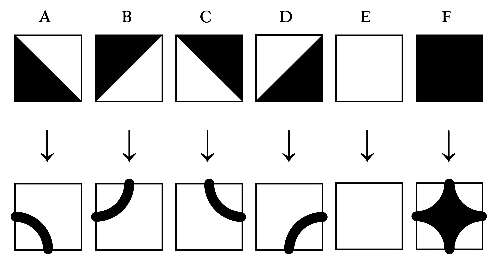
To test these new designs in the generator, you can alternate between the angular mode and the wavy mode and scroll back up to see the results. Make sure to try this new mode with the full set of tiles ({a, b, c, d, e, f}) for the best results. You’ll also notice that the width of the wavy lines changes from one generation to the next, because it makes it prettier.
Tilings of many colours
One of the questions I sought to answer with this project was: How could we apply colours to the tilings of Truchet? In order for the coloration of a tiling to respond harmoniously to its symmetrical construction, I decided to define its colours using the same staircase shape from which it is built.
To do so, I created a system that randomly chooses four colours for each generation of a staircase. Colours 1 and 2 and assigned to the tiles’s lighter part, and colours 3 and 4 to their darker part. The colours are then applied on the staircase, creating a gradient from colour 1 to colour 2 and another from 3 to 4. When the staircase is mirrored and copied to create the whole tiling, the colours are thus spread over it with the same horizontal, vertical, and diagonal symmetries.
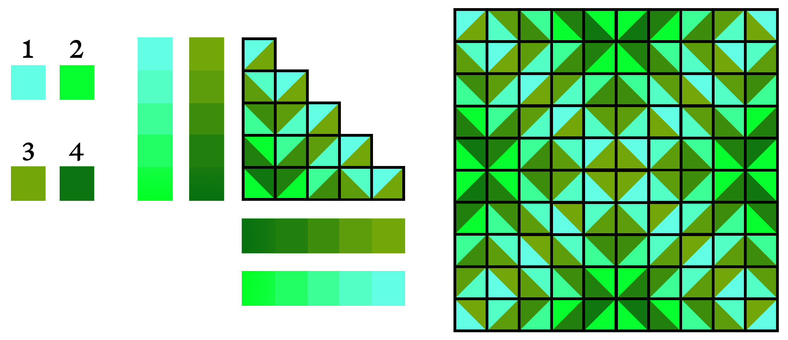
Then, in order to give a subtle textured look to the tilings, the generator doesn’t simply draw triangles and squares to form the tiling: it draws thousands of minuscule circles within the limits of each tile. A full tiling is made of around 15 million dots.
I did not include the generator of multicoloured tilings on this page because the majority of the colour palettes that it generates are quite dissonant (they are, after all, completely random) and the drawing of a tiling using millions of dots takes a few minutes to complete. Nevertheless, if your patience and your courage are limitless, you are welcome to try the multicolour generator for yourself.
For the others, here are some tilings generated in early 2018:
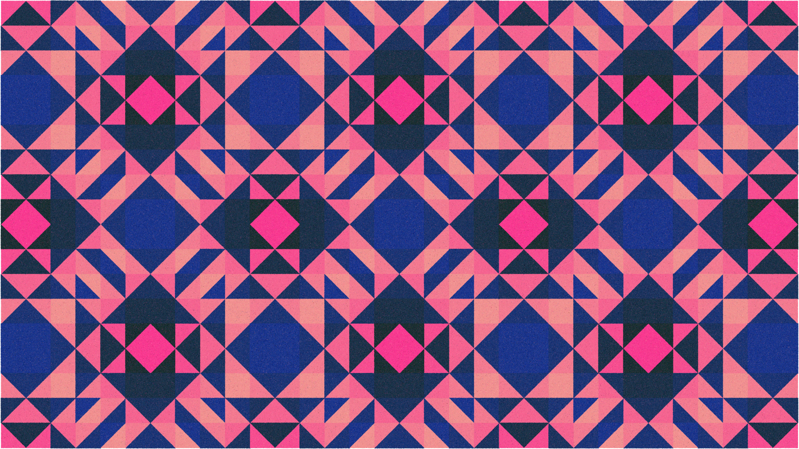 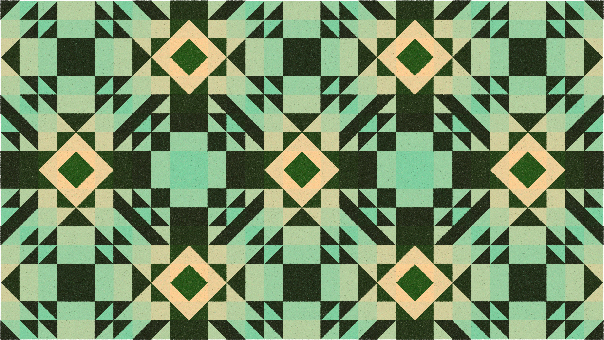 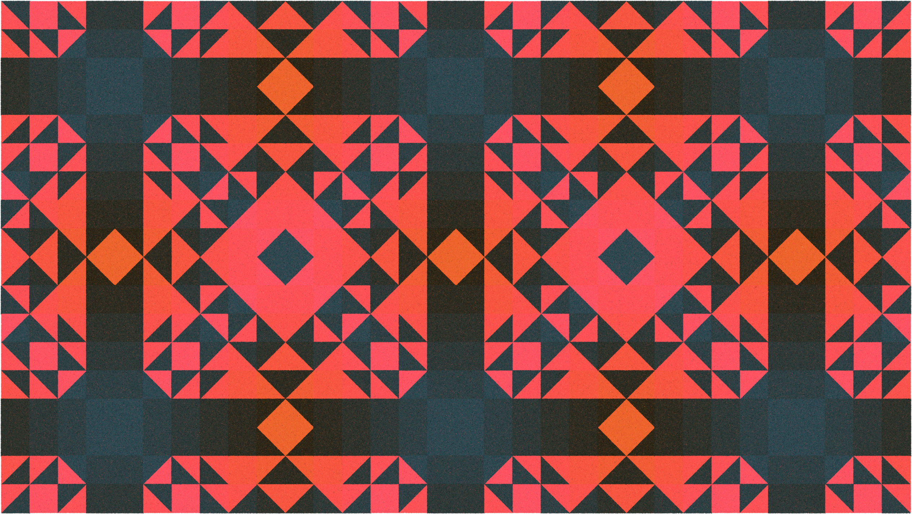
{kind=link}
{kind=link}
{kind=link}
{kind=link}
{kind=link}
{kind=link}
{kind=link}
{kind=link}
{kind=link}
{kind=link}
{kind=link}
{kind=link}
{kind=link}
{kind=link}
{kind=link}
Possible new paths
Tilings form an enormous mathematical domain, and there are many new avenues that I would love to take to bring this project further. Here are a few of them:
- — Create a generator that would build the staircase shapes in a manner that more closely resembles how Truchet did it. For now, each tile of a staircase is chosen completely at random, independently of its neighbouring tiles. As we can see in his Memoir on Combinations, Truchet built his staircases by repeating a few simple combinations of tiles. This method tends to create more harmonious tilings.
- — Explore more complex types of tilings, like pentagonal tilings or the tilings of Penrose. I’m especially interested by the fascinating tilings discovered by Marjorie Rice in 1976 and 1977. I highly recommend you to learn about Rice if you haven’t already. She was a brilliant woman who succeeded, without the opportunity to pursue the university education in mathematics that she dreamed of, to discover new types of pentagonal tilings that had eluded academic researchers.
- — Mix the concepts of cellular automata with the tilings of Truchet. The automata could have rules that would consider the states from a to f. What could those rules be? Would it be possible to preserve the symmetries that are so characteristic of Truchet’s work?
- — Create animated tilings. How could we make an animation film made from moving tilings? Are there are already good examples that exist?
Licences and usages
The work done for this project is distributed under free and open licences. You are free to distribute it, to modify it, and to distribute your modified versions, if you respect the following conditions: your modified versions must also be distributed under a free licence and must mention the source of the original work. For more details, see the licences themselves:
- — This web page (including the text and images) is distributed under a Free Art Licence 1.3. The images taken from Sébastien Truchet’s Memoir on Combinations are, of course, in the public domain.
- — The black and white tiling generator included on this page is distributed under a Gnu Gpl 3.0 Licence. The multicolour generator is distributed under the same licence.
Sources
I learned about Truchet’s Memoir on Combinations and Dominique Doüat’s Method to Make an Infinity of Different Designs (which was also quite helpful in preparing this project) from the research of Jacques André, a French mathematician and typographer. A pdf document (in French) of his research is available on his website, and distributed under a free copyleft license.